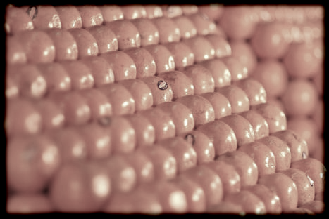

"ערימות של תפוזים בסופרמרקט" מהווים מוקד עניין מתמטי מיוחד במינו. ניתן להוכיח כי זוהי שיטת סידור הכדורים המאופיינת בדחיסות הגבוהה ביותר. (השערה זו כבר הועלתה על-ידי יוֹהאֶנס קֶפּלֶר [Johannes Kepler] בשנת 1611. ואולם הוכחת ההשערה התאפשר רק בשנת 1998 על-ידי תומס האלס [Thomas Hales] באמצעות עזרה מסיבית של מחשבים). אין זה מקרה שסידור זה מאפיין לעתים קרובות אטומים בגבישים משוכללים. בחלון שמימין תוכלו לצפות בהמחשה גרפית של צורת סידור זו וכן במספר תת-מבנים של שלה.
|  |
ערימות תפוזים בסופרמרקט סיני